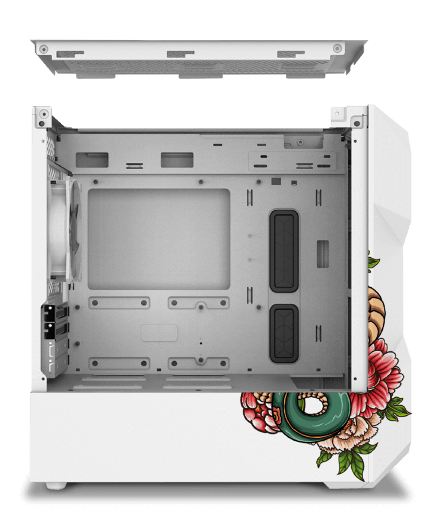

Diseñada especialmente para los amantes de lo único y especial
¿Serás parte de uno de los 30 dueños de esta edición especial?
diseño inspirado en el dios ryujin
Ryujin [龍神] es un dios Dragón también conocido como watatsumi [海神] que vive en
el
océano
y aparece en varios mitos japoneses.
Se convierte en un ser humano y le robó joyas invaluables a un príncipe.
kanji en su panel frontal
Los Kanji son utilizados en el idioma japonés para expresar conceptos
El kanji del Dios dragón de los mares japoneses es Ryujin
grabado único en su parte posterior
Tauret Ryujin es una edición especial, donde se ensamblaron solo 30 unidades y
cada uno tiene grabado un láser en su parte posterior con el número de ensamblaje correspondiente

PANEL SUPERIOR REMOVIBLE
Su panel superior es completamente desmontable para mejorar el acceso a los componentes
durante el montaje.
La facilidad de uso también facilita el montaje de soluciones de refrigeración como
ventiladores y
radiadores.